第十一章 回归与聚类
第十章完成数据管理与清洗后，研究者终于得到了一张“每一行代表什么、每一列意味着什么、每次处理都留有记录”的分析数据表。接下来的问题不再是“能不能算”，而是“要回答什么问题、该用什么模型、结论可以说到什么程度”。本章讨论两条常见但方向不同的分析路径：回归用来描述或预测结果变量与若干条件之间的关系；聚类用来从没有预先标签的对象或变量中发现相似性结构。
两类方法共享同一条工作原则：先用研究问题界定变量和分析单位，再以图形和数据诊断选择方法，最后让统计结果回到教育情境中解释。软件输出的是系数、显著性和分类编号；研究结论则必须由研究者结合数据质量、模型前提、样本边界和理论含义作出。
11.1 从“有关联吗”到“如何建模”
面对两个变量，最初的问题通常是“它们是否一起变化”。例如，学生的学习时长是否与成绩共同升高，家庭阅读资源是否与阅读表现有关，或某项量表得分是否与平台互动次数有关。相关分析回答的是共同变化的方向与强度：一个变量较高时，另一个变量倾向于较高、较低，还是没有稳定变化。它不区分谁是原因、谁是结果。
开篇散点图的横轴是体重，纵轴是肺部大小。红点总体由左下方向右上方分布，提示二者存在正向的线性趋势；但点没有完全落在一条直线上，说明关系并非没有误差。这样的散点图是后续相关或回归分析的起点：它让研究者先看见关系形状、离群点和取值范围，而不是直接从输出表中寻找一个显著性数值。
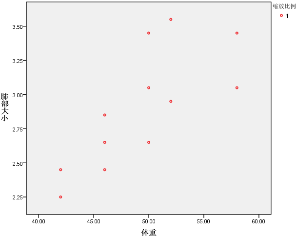
相关不是一项“默认点击”的计算。变量的测量尺度、关系是否单调、是否近似线性，以及异常值和大量并列等级的情况，都会影响相关系数的选择。表11-1给出进入分析前应先回答的问题。
| 研究问题 | 结果变量或对象 | 首先要看的证据 | 可能的方法 |
|---|---|---|---|
| 两个连续变量是否近似线性地共同变化 | 两个连续变量 | 散点图、异常点、分布 | Pearson 相关；必要时线性回归 |
| 两个等级变量是否同向变化 | 两个有序变量 | 等级顺序、并列值、单调趋势 | Spearman 或 Kendall 等级相关 |
| 在排除某个已知共同因素后，两变量是否仍有关联 | 两个关注变量和一个或多个控制变量 | 控制变量的理论角色、样本量 | 偏相关或多元回归 |
| 用若干因素估计一个连续结果 | 一个连续因变量和若干自变量 | 散点图、残差、变量编码 | 线性回归或曲线模型 |
| 用若干因素解释事件发生的次数 | 非负整数计数 | 观察时长或暴露量、均值与离散程度 | 泊松或其他计数回归 |
| 在没有预设类别时发现样本或变量的类型 | 多个个案或变量 | 变量尺度、距离、标准化、类别可解释性 | 层次聚类或 K-means 聚类 |
相关系数要与变量类型相匹配
Pearson 相关系数适合考察两个连续变量之间的线性共同变化；其值记为 r，取值范围在 -1 到 1 之间。正值表示同向，负值表示反向，绝对值越大表示线性关系越强。Spearman 的 rho 和 Kendall 的 tau 则先利用观测值的等级次序，因此更适合有序变量，或虽不满足严格线性但呈单调趋势的数据。它们不是“哪个更高级”的关系，而是对不同数据结构作出匹配。
| 方法 | 适合的数据与关系 | 系数所表达的含义 | 需要特别检查的情况 |
|---|---|---|---|
| Pearson r | 连续变量，关系近似直线 | 两变量的线性共同变化程度 | 离群点、弯曲关系、范围过窄会使 r 失真 |
| Spearman rho | 有序变量，或连续变量呈单调但不必线性的关系 | 排名次序是否同向变化 | 大量并列排名会降低信息量 |
| Kendall tau | 有序数据、较小样本或并列值较多时常用 | 成对观测的一致与不一致程度 | 应说明具体使用的 tau 版本和并列值处理 |
| 偏相关 | 关注两变量在控制变量后仍保留的线性关联 | 控制给定变量后的条件相关 | 控制变量必须有理论依据，不能把所有变量机械放入 |
相关分析的设置界面将两项变量放入分析框，并在Pearson、Spearman、Kendall中选择与数据相符的系数；结果界面则给出Pearson的2×2相关矩阵。每个非对角线单元格依次给出相关系数、双侧p 值和样本数；同一关系在矩阵上下两侧重复出现，因此阅读其中一个非对角线单元格即可。体重与肺部大小的r为0.766，样本量为12，p 值为0.004。这表明在这12个观测中存在较强的正向线性关联，但它并不说明体重“造成”肺部大小改变。
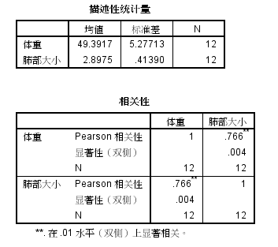
等级相关案例使用年龄和正答题数的数据，同时给出Kendall tau-b与Spearman rho。两种系数都很高，且对应的双侧p 值小于0.001，说明在该样本中年龄越大，正答题数的等级总体越高。这里的“越高”是对排序关系的描述；如果年龄增长还伴随教学内容、题目难度或样本来源的变化，不能把等级相关直接解释成发展效应。
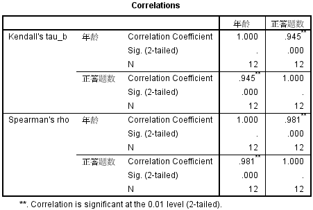
偏相关：把共同背景放到台面上
两个变量看起来有关，可能是因为它们都与第三个变量有关。以身高、体重和肺活量为例，体重与肺活量的简单相关可能部分反映“身高较高的人往往体重也较高，肺活量也较大”。偏相关的作用是：在统计上固定身高后，再考察体重与肺活量之间的线性关联是否仍然存在。
偏相关案例先将体重和肺活量放入相关变量框，再把身高放入控制变量框；结果表比较未控制和控制身高后的相关。未控制时体重与肺活量的Pearson r为0.623，p 值为0.003；控制身高后，二者的相关降为0.294，p 值为0.221。这个变化提示原来的简单相关很大一部分与身高共同变化有关。它不表示“身高已经被从现实中删除”，而是表示在本样本、给定线性模型和控制设定下，体重与肺活量的剩余线性关联较弱。
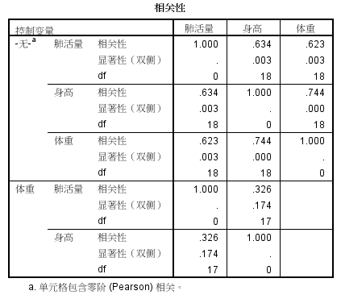
相关、偏相关和回归都只能从已有数据中刻画关系。即使回归模型中把一个变量写作“自变量”、另一个变量写作“因变量”，也不自动建立时间先后、排除反向影响，更不能替代随机实验或严谨的因果设计。本书已删除原先独立的“相关与因果”章节，因此本章只保留这一必要的解释边界：统计控制能够缩小一些可见混杂，却不能保证没有遗漏变量、选择偏差或测量误差。
11.2 回归：把关系写成可检验的预测模型
相关回答“两个变量如何共同变化”，回归则明确一个结果变量，并用一个或多个预测变量来描述它的条件期望。例如，用体重预测身高、用学习投入和原有成绩共同预测期末成绩，或用是否吸烟与是否饮浓茶预测一天内早搏的次数。回归的价值主要有两点：一是给出可报告的方程和效应大小；二是在多元模型中比较“在其他纳入变量相同的条件下”的关联。
模型形式必须由因变量的类型和研究目的决定。线性、曲线、逻辑、序回归、非线性和加权估计等选项，强调的不是要逐项尝试，而是要先辨认结果变量的尺度。表11-3概括了其中最常见的选择。
| 因变量 | 典型研究问题 | 常见模型 | 结果的核心表达 |
|---|---|---|---|
| 连续分数、均值、量表总分 | 哪些因素与成绩高低有关？ | 线性回归 | 在其他变量相同的条件下，预测变量每增加一单位，结果平均改变多少 |
| 0／1 二分类结果 | 谁更可能完成课程或通过考试？ | 二元 Logistic 回归 | 比值比或预测概率的变化 |
| 有序等级 | 满意度等级与哪些因素有关？ | 有序回归 | 进入更高等级的相对可能性 |
| 多类别无序结果 | 学生属于哪类去向？ | 多项 Logistic 回归 | 相对某一参照类别的比较 |
| 非负整数次数 | 一周缺勤多少次？ | 泊松或其他计数回归 | 发生率比或预期次数比 |
| 曲线形连续关系 | 学习表现是否呈加速、饱和或衰减？ | 曲线估计或非线性回归 | 与理论相符的曲线参数和拟合表现 |
无论使用哪一种模型，都可以遵循“问题—图形—拟合—诊断—解释”的顺序。先明确一行数据代表谁、哪个是结果变量、哪些变量应进入模型；再用散点图、频数表和分布图观察数据；随后拟合有理论根据的模型；最后检查残差、异常个案、共线性、拟合质量和外推边界。先运行软件再倒推问题，容易把一串偶然显著的输出误当作研究发现。
一元线性回归：从散点到方程
一元线性回归可写成：
Y = b₀ + b₁X + e
其中，Y 是需要预测的连续结果，X 是预测变量，b₀ 是截距，b₁ 是斜率，e 是模型未能解释的个体差异。图11-5展示体重与身高的散点图及拟合直线。点云总体随体重增加而上升，直线概括了这种平均趋势；每个点到直线的垂直距离就是残差。残差的存在不是模型失败，而是提醒我们身高还受许多未进入该模型的因素影响。
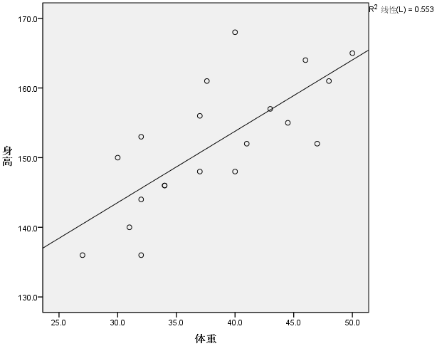
该案例的输出给出方程“身高 = 112.833 + 1.024 × 体重”。在样本和变量单位不变的前提下，体重每增加 1 个单位，模型预测身高平均增加约 1.024 个单位；112.833 是体重取 0 时的数学截距。若 0 不在样本的合理体重范围内，截距并没有直接的实际意义，不能把它写成真实人的身高。更稳妥的写法是说明样本范围内的斜率及其不确定性。
线性回归的三类输出需要并列阅读：模型摘要中的R²为0.553，表示在这一样本中体重所对应的线性模型解释了身高变异的约55.3%；方差分析表的F检验用于检验整个模型是否优于只有截距的模型；系数表给出截距、斜率、标准误、t、p 值和置信区间。多元模型还会出现容差和VIF，用于发现预测变量之间过于重叠的风险。课程常把“容差大于0.1或VIF小于10”作为初步筛查，但这些只是经验阈值；真正需要关注的是共线性是否使系数不稳定、标准误异常增大或结论随变量组合而改变。
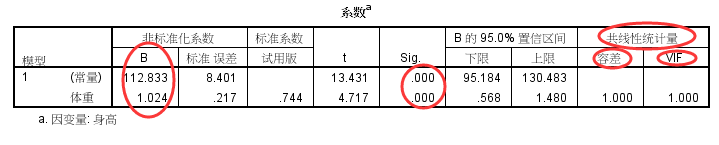
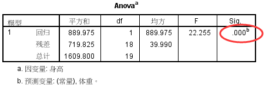
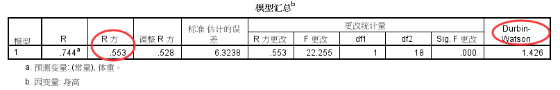
| 输出位置 | 要回答的问题 | 可报告的内容 | 常见误读 |
|---|---|---|---|
| 模型摘要 | 模型在样本中解释了多少变异？ | R²、调整后 R²、估计标准误 | 把 R² 当作因果强度，或只比较数值而忽略过拟合 |
| 方差分析表 | 整个模型是否优于只有截距的模型？ | F、自由度、p 值 | 用整体显著性替代每个系数的解释 |
| 系数表 | 控制同模型中其他变量后，某预测变量的关联方向和大小是什么？ | B、标准误、置信区间、t、p 值 | 忽略单位、参照组和变量编码 |
| 共线性统计量 | 预测变量是否高度重叠，以致系数不稳定？ | 容差、VIF、变量之间的相关与理论关系 | 把任一固定阈值视为放之四海而皆准 |
| 残差和影响诊断 | 线性、方差齐性、独立性和异常个案是否可接受？ | 残差图、影响点、必要的修正或敏感性分析 | 只报告显著性，不检查模型是否适合数据 |
残差诊断决定模型能否被信任
拟合直线并不是线性回归的终点。图11-7左侧是标准化残差的直方图和叠加的正态曲线，用于观察残差分布是否存在明显偏斜、厚尾或多峰；右侧将标准化残差与身高作图。理想状态下，残差应围绕零随机散布，不应形成弯曲、漏斗或时间顺序上的结构。美国国家标准与技术研究院的回归诊断指南也强调，残差图能够揭示在原始散点图中不易看出的模型设定问题。
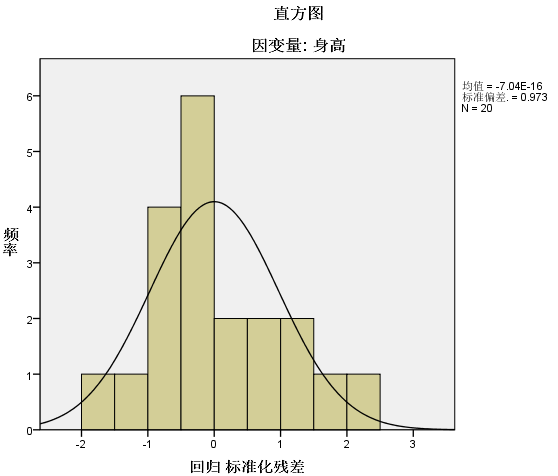
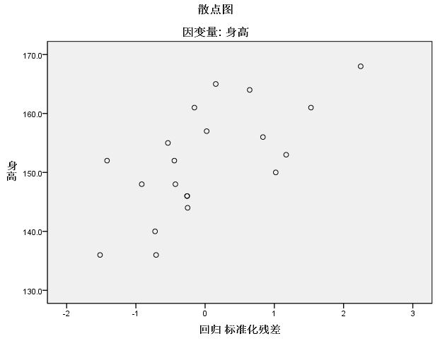
对于按时间、班级或学校连续记录的数据，还应注意残差的独立性。图11-6模型摘要中标出的 Durbin-Watson 统计量常被用作一项线索，数值接近 2 通常与一阶自相关较弱相符；但它不能替代对数据收集顺序、重复测量和层级结构的判断。若同一学生多次作答、学生嵌套在班级中，或记录具有明显时间依赖，普通独立观测的线性回归可能并不合适，需要考虑重复测量、多层模型或时间序列等方法。
多元回归与变量选择：控制不是“消除一切”
多元线性回归将多个预测变量同时放入模型：
Y = b₀ + b₁X₁ + b₂X₂ + … + bₚXₚ + e
例如，研究学习投入与期末成绩的关系时，可以在同一模型中纳入原有成绩、年级、家庭学习资源和平台使用情况。此时 b₁ 描述的是“在模型中其他变量取值相同的条件下，学习投入与成绩的条件关联”。它有助于减少某些已测量背景因素造成的混杂，却不能弥补未测量因素、错误控制中介变量或样本选择偏差。
逐步回归会按照预设的统计规则自动加入或剔除变量，因而常被当作面对许多候选变量时的捷径。它可以用作探索工具，但不应成为理论建模的替代品：不同样本、相近变量或一点数据扰动都可能改变入选变量。较稳妥的做法是先依据研究问题和既有证据确定核心变量与必要控制变量，再比较少量有明确含义的竞争模型；若使用自动选择，应说明算法、候选变量集和结果稳定性。
11.3 曲线参数估计：先看形状，再谈“最佳模型”
变量间的关系不总是一条直线。图11-8的八个观测点显示，随着一项条件变量变化，结果变量在前段快速下降、后段逐渐平缓。这种曲线形态提示线性直线可能只抓住了平均下降方向，却遗漏了“先快后慢”的结构。图中用点而不是连续曲线呈现数据，提醒我们任何函数都只是基于有限观察作出的近似。
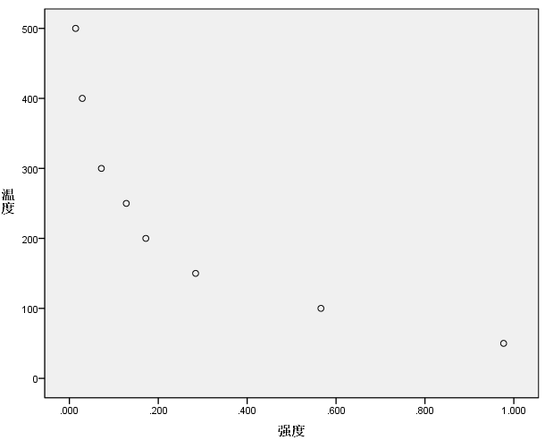
曲线参数估计可以比较线性、二次、三次、指数、对数、幂函数等多个候选模型。图11-9将同一批观测点与线性、三次和指数曲线叠放。实线、虚线和点划线在不同区间的贴合程度不同：高阶曲线能更贴近一些样本点，却也更容易把随机波动当作规律。右侧的示意曲线补充说明，研究者应由数据形状和领域知识提出候选函数，而不是在所有模型中挑出一个数值最大的结果。
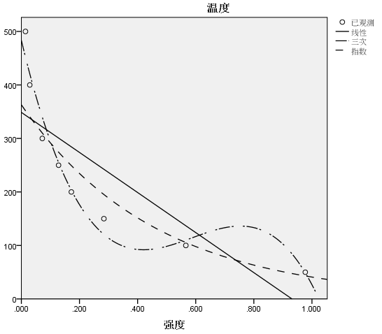
| 模型 | 基本表达 | 可用来描述的形状 | 选择时的提醒 |
|---|---|---|---|
| 线性 | Y = b₀ + b₁X | 稳定上升或下降 | 先检查残差中是否仍有弯曲 |
| 二次 | Y = b₀ + b₁X + b₂X² | U 形或倒 U 形 | 转折点必须落在有意义的数据范围内 |
| 三次 | 包含 X、X² 和 X³ | 可能有两次弯折的复杂趋势 | 参数较多，尤其要防止过拟合 |
| 指数 | Y = b₀e^(b₁X) | 快速增长、快速衰减 | 结果通常要求为正，需检查解释是否合理 |
| 对数 | Y = b₀ + b₁ln(X) | 前期变化快、后期趋缓 | X 必须为正，零值需另行处理 |
| 幂函数 | Y = b₀X^b₁ | 比例缩放或尺度关系 | 单位改变会影响参数解释，应说明量纲 |
判断模型不能只依赖“调整后 R² 更接近 1”。首先，比较的模型必须对同一结果变量、同一批观测和同一验证策略拟合；其次，应检查参数方向、残差图和样本外预测；最后，模型必须说得通。例如，某教育干预的学习收益在短期可能上升后趋缓，但若一条三次曲线在样本范围外预测成绩无限下降或上升，它就不宜被当作过程规律。曲线拟合的好处是让研究者看见非线性，风险是让复杂公式掩盖数据不足。
11.4 泊松回归：当结果是“发生了多少次”
线性回归面向连续结果；但缺勤次数、错误次数、登录次数、某段时间内的发帖数等都是非负整数。它们常出现大量小值或零值，且预测值不能是负数，因此直接用普通线性回归往往不自然。泊松回归是处理计数结果的一种基本模型，通常使用对数链接：
ln[E(Y)] = b₀ + b₁X₁ + b₂X₂ + …
这里的 E(Y) 是给定条件下的预期次数。将系数指数化得到 Exp(B)，可在控制其他变量后解释为预期次数或发生率的倍数。在 R 的广义线性模型文档中，poisson 家族以 log 为常用链接，并允许通过 offset 把已知的观察时长、人数或面积纳入线性预测器。因此，比较“不同班级的迟到次数”时，班级人数或观察周数不同就不能被忽略。
| 要检查什么 | 为什么重要 | 例子 |
|---|---|---|
| 因变量是否真是计数 | 泊松模型的结果应是 0、1、2 等次数，而不是百分比或连续得分 | 一周缺勤天数、一次测验的错误题数 |
| 每条记录的观察范围是否相同 | 观察时间、人数、面积不同会使“次数”不可直接比较 | 记录 7 天和记录 30 天的发帖数不应视作同一暴露量 |
| 个案是否可近似独立 | 同一学生的连续次数或同班学生可能相关 | 同一学生每天的登录次数需要处理重复测量 |
| 均值与离散程度是否相符 | 明显过度离散时，普通泊松的标准误和 p 值可能不可靠 | 少数学生有极多缺勤，方差远大于均值 |
| 是否有过多零值 | 零值来源可能不是同一种过程 | 从不使用平台与使用者恰好零登录，可能需要不同模型 |
| 自变量是否高度重叠 | 共线性会使系数和发生率比不稳定 | “学习时长”和“视频观看时长”高度相关 |
案例考察 39 名有胸闷症状的非器质性心脏病男性患者在 24 小时内的早搏数，并以是否饮浓茶、是否吸烟作为预测变量。图11-10左侧给出早搏数和两个二分类预测变量的数据视图，右侧是对泊松分布的初步检验输出。这样的分布检验只能作为描述性线索，不能凭“p 值大于某个阈值”就证明模型正确。更关键的是检查观察窗口是否一致、是否存在过度离散、零值是否过多，以及残差和拟合统计量是否支持该模型。
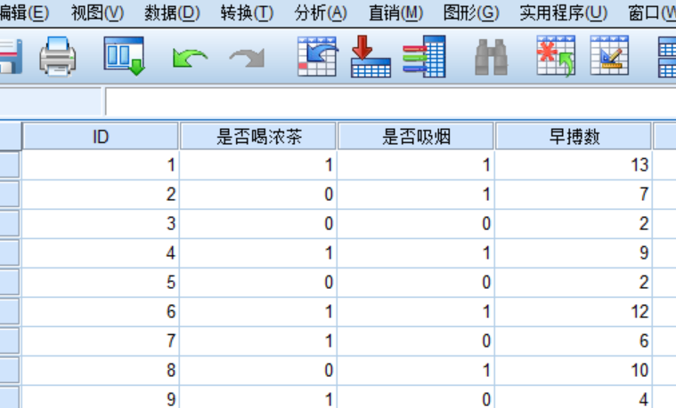
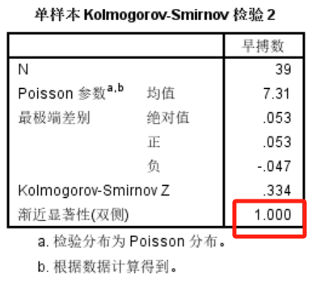
参数表去掉不显著交互项后，模型为：
ln[E(早搏数)] = 1.332 + 0.423 × 是否饮浓茶 + 0.608 × 是否吸烟
在该样本、24 小时观察窗和模型设定下，饮浓茶者的 Exp(B) 为 1.527，表示其预期早搏次数约为不饮浓茶者的 1.527 倍，95% 置信区间为 1.270 至 1.835；吸烟者的 Exp(B) 为 1.837，置信区间为 1.455 至 2.321。拟合优度表中的 Pearson 卡方与自由度之比接近 1，提供了没有明显过度离散的一项线索。由于案例不是随机对照试验，这些倍数应解释为条件关联或发生率差异，不能写成饮茶或吸烟“导致”了多少早搏。
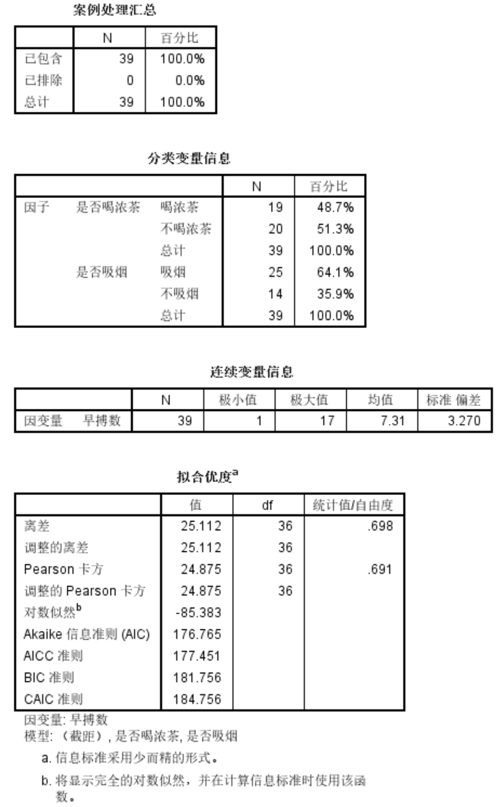
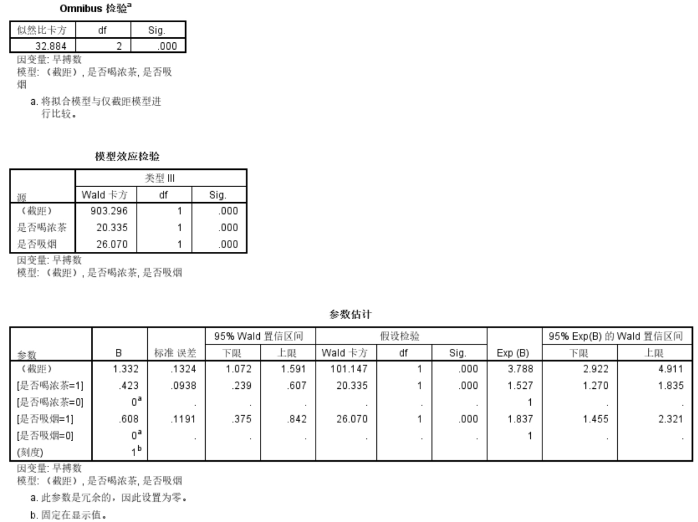
若明显存在过度离散，不能仅沿用普通泊松回归的默认标准误。R 的统计文档说明，quasipoisson 家族允许离散参数不固定为 1，可用于处理过度离散；在不同研究情境下，也可能需要负二项、零膨胀或多层计数模型。方法名称不是越复杂越好，关键在于说明哪一种数据问题促使研究者改变模型。
11.5 聚类：在没有预设标签时发现类型
回归以一个结果变量为中心；聚类则不预设“正确答案”或因变量，而是依据多个特征之间的相似或不相似，把对象组织成若干类。它回答的不是“X 是否预测 Y”，而是“这批学生、班级、学校或变量之间是否存在可解释的结构”。聚类常用于学习者画像、课程参与模式、学校特征分型或测量指标的降维。
其基本思想可概括为：在所选变量和距离度量下，同一类内部的差异尽量小，不同类之间的差异尽量大。但“相似”不是自然存在的标签，而是由研究者选择哪些变量、是否标准化、采用何种距离和联结方法共同决定的。一个把学习时长以小时计、成绩以百分制计的数据集，如果不先处理尺度差异，数值范围较大的变量可能主导距离。
| 类型 | 被聚类的对象 | 教育研究中的例子 | 输出应如何解释 |
|---|---|---|---|
| Q 型聚类 | 样本、个案或单位 | 按学习时长、作业完成和成绩把学生分型 | 每个学生获得类别编号，再比较各类的特征 |
| R 型聚类 | 变量或指标 | 将若干课程成绩、量表题或行为指标按共同变化模式分组 | 识别变量群或相近维度，不能直接给人群贴标签 |
| K-means 等非层次聚类 | 通常是大量个案 | 对较大规模的学习行为数据快速划分 k 类 | 需预先给定 k，结果依赖初始中心和标准化 |
| 层次聚类 | 个案或变量 | 通过树状图探索不同合并层次 | 不必预先固定类数，但早期合并无法撤回，需检验稳定性 |
Q 型层次聚类：把个案分成可解释的类型
Q型层次聚类树状图展示29名学生在多门数学课程成绩上的相似关系。树的每个末端代表一名学生，横轴是重新调整后的距离或合并尺度。从左向右看，连接得越早、横向距离越短的学生，在所选成绩变量上越相似；在距离突然增大的位置截断树，可以得到不同数量的类别。图中并不存在一个由软件自动宣布的“正确切点”，研究者需要同时比较树状图、聚类表、各类样本量和教育上的可解释性。
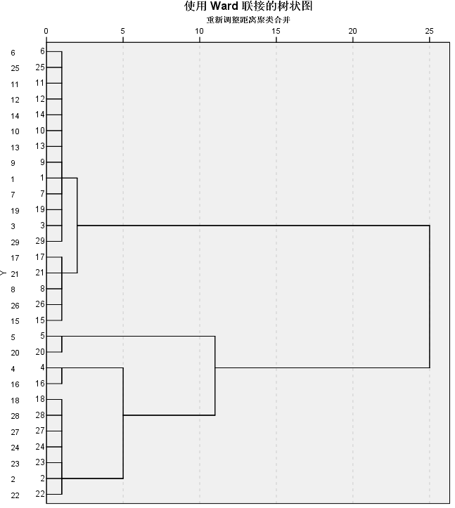
层次聚类完成后，数据表通常会新增一个类别变量。图11-13中，原有的“数学61”“数学62”等成绩列右侧出现 CLU3_1，新列以 1、2、3 编码三个聚类。编号只是一种标签，不表示第一类优于第二类，也不包含“高、中、低”的意义。研究者必须比较各类在原始变量上的均值、分布和典型个案，再为其命名，例如“多科稳定高表现型”“偏科型”或“整体低表现型”；若没有足够证据，也应只使用中性的“第 1 类”“第 2 类”。
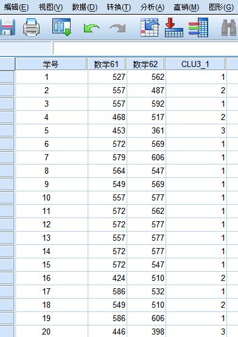
R 型层次聚类：把变量按共同模式归组
R 型聚类的对象不是学生，而是变量。图11-14左图的冰状图以不同宽度的纵向色带表示四个班级变量在不同聚类数下的归属；右图的树状图显示数学61班、数学62班较早合并，而数学63班与数学64班在更大的距离上才与其他变量合并。它提示这些班级成绩变量的共同变化模式不同。若研究目的是减少一组高度相近的指标，R 型聚类可帮助挑选代表变量或形成后续的维度解释，但它不能替代信度、效度或因子分析的完整论证。
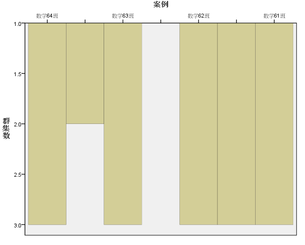
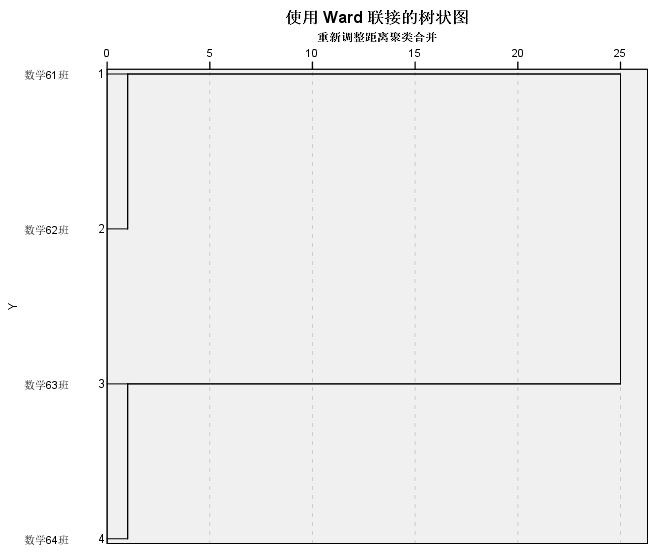
| 阶段 | 要做什么 | 需要留下或报告的证据 |
|---|---|---|
| 界定对象 | 明确聚类的是学生、班级、学校，还是变量 | 分析单位和每个变量的含义 |
| 选择变量 | 只保留与分型问题相关、质量可接受的特征 | 变量清单、编码、缺失处理和纳入理由 |
| 处理尺度 | 检查单位和量纲，必要时标准化连续变量 | 原始尺度、标准化方法和异常值处理 |
| 选择算法 | 决定层次或非层次方法、距离和联结规则 | 距离度量、联结方法、预设类别数或探索范围 |
| 比较方案 | 查看树状图、聚合系数、类别规模与轮廓特征 | 两类、三类等候选方案的比较 |
| 描述类别 | 用原始变量的均值、分布、图形和典型案例解释 | 每类样本数、特征表、命名依据 |
| 检查稳定性 | 更换样本、变量、随机初值或距离设定后复核 | 重抽样、留出样本或敏感性分析的结果 |
IBM 对层次聚类的说明也指出，变量的尺度会影响聚类解，存在相同距离时个案顺序也可能改变结果；作为探索性方法，聚类结果应在独立样本或其他设定下得到检验。这些提醒与教育研究尤其相关：如果类别只在某一个班级、某一届学生或某一组指标下出现，就不宜把它描述为普遍存在的“学生天生类型”。
11.6 AI 可以协助读表，不能接管统计判断
面对复杂的统计输出，AI 可以帮助把表格术语转换为初步的阅读提纲，例如提示研究者查看整体模型、参数估计、置信区间和结论边界。图11-15展示一段针对泊松回归输出的 AI 解读：左侧先给出问题和截图，随后分段说明整体检验、变量效应、Exp(B)、参照组和置信区间。这样的结构有助于整理报告，但它的正确性依赖于输入是否完整、变量编码是否清楚、模型是否已通过诊断，以及解读者是否回到原始输出逐项核对。
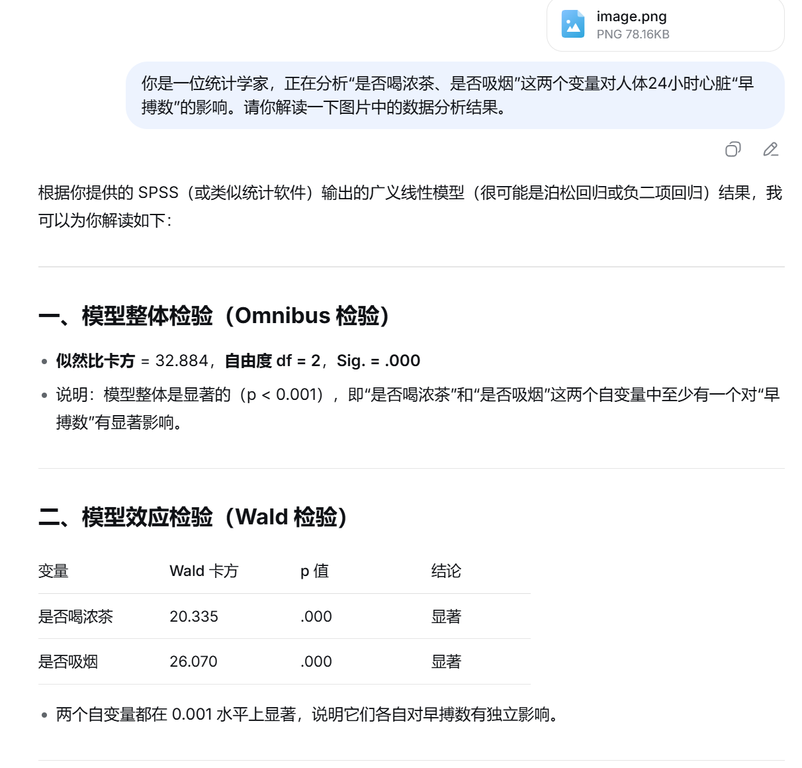
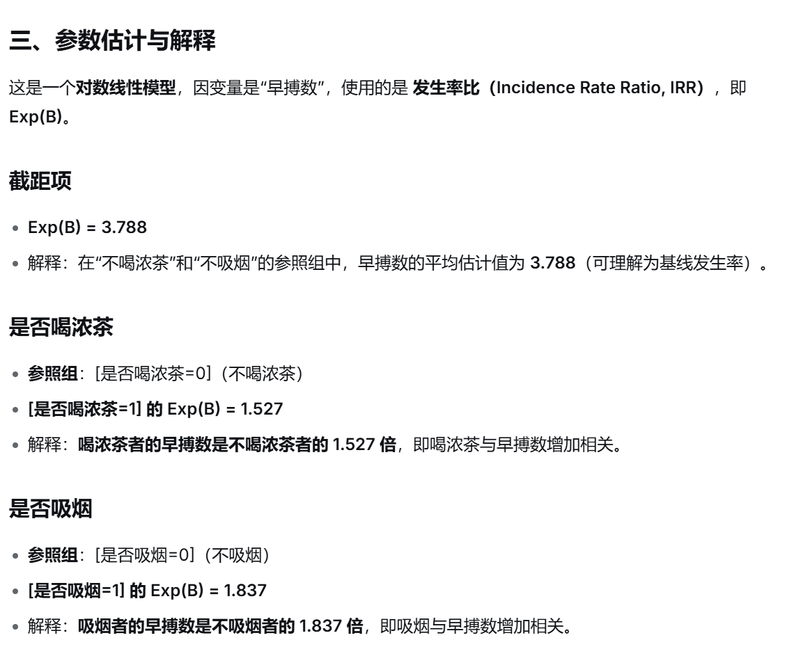
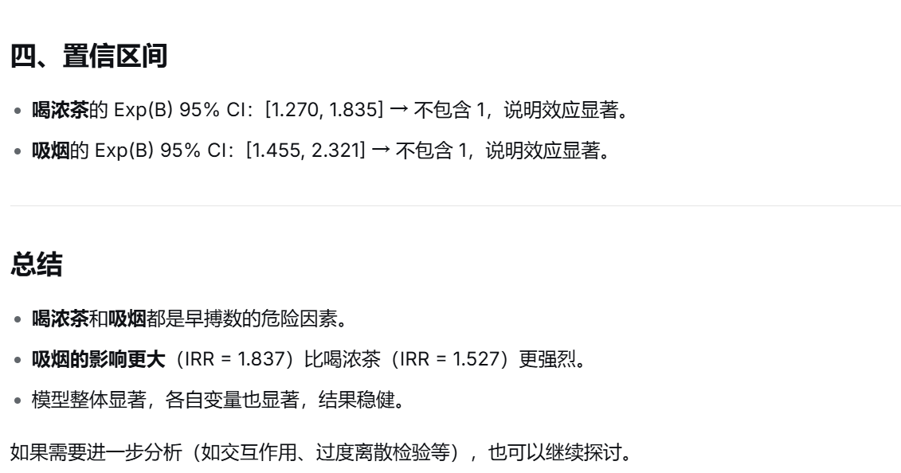
使用 AI 解读统计结果时，至少应做到四点。第一，先脱敏，不能上传姓名、学号、联系方式、病历或可重新识别的原始数据。第二，明确说明因变量、自变量、编码方向、参照组、样本量、模型类型和观察窗口；只截一张系数表往往不足以可靠解释。第三，要求 AI 给出“需要回查的假设和不确定性”，而不只是让它生成结论。第四，逐项核对系数、p 值、置信区间和模型名称，并把最终文字写成与设计能力相称的关联性结论。
11.7 将输出写成可复核的研究结果
统计写作的目标不是把软件表格逐行抄写，而是让读者知道分析的对象、模型、关键数值和结论边界。表11-9给出不同分析的一组最小报告要素。
| 分析 | 至少说明什么 | 可采用的边界表达 |
|---|---|---|
| Pearson／等级相关 | 样本量、系数类型与数值、置信区间或 p 值、变量方向 | “学习时长与成绩呈正向线性关联” |
| 偏相关 | 控制了哪些变量、控制前后系数和样本量 | “控制原有成绩后，学习时长与期末成绩仍呈正向关联” |
| 线性回归 | 因变量、预测变量、编码和单位、B、置信区间、模型拟合与诊断 | “在纳入年级和原有成绩后，学习时长与期末成绩呈正向预测关系” |
| 曲线模型 | 候选模型、选择依据、曲线参数、图形和外推范围 | “样本范围内呈现先快后缓的下降趋势，指数模型拟合较好” |
| 泊松回归 | 计数定义、观察窗口或 offset、发生率比、置信区间、离散性检查 | “在相同观察窗口下，吸烟组的预期发生次数较高” |
| 聚类 | 聚类对象、变量、标准化、算法、距离、类别数、每类特征与稳定性 | “在所选变量和设定下，样本可探索性地分为三种表现模式” |
下面是一段线性回归的写作框架，可用实际变量和数值替换：
以期末成绩为因变量、学习时长和原有成绩为预测变量建立线性回归模型。模型整体具有统计证据，调整后 R² 为……。在控制原有成绩后，学习时长每增加……单位，期末成绩的预测值平均增加……分，95% 置信区间为……。残差图未见明显的系统弯曲；该结果描述的是样本中的条件预测关系，不构成因果效应估计。
聚类的写作框架则应把“如何分”和“分完后每类是什么样”都写清：
对……名学生在……、……和……三个标准化指标上进行 Ward 层次聚类，使用……距离。比较二类至四类方案后，选择三类作为探索性解：第一类……人，表现为……；第二类……人，表现为……；第三类……人，表现为……。更换……设定后主要类别特征仍然／不再稳定，因此结论应视为……范围内的描述。
这里的“条件预测关系”“探索性地分为”“样本范围内”等措辞不是削弱结论，而是使结论与证据匹配。若研究需要回答因果问题，应在研究设计阶段加入时间顺序、对照、随机化、准实验或明确的因果识别策略，而不能在回归表完成后补上“影响”“导致”等词。
常见误区
第一，看到相关显著就写成因果。第二，未看散点图和残差图便套用 Pearson 或线性回归。第三，只报告 p 值，不说明系数单位、置信区间、样本量和模型拟合。第四，把高 R² 当作模型正确，或把调整后 R² 最大的曲线当作真实机制。第五，用普通线性回归处理明显偏态的次数数据，又忽略观察窗口不同。第六，把一个 VIF 阈值、一次分布检验或一个拟合指标当作模型成立的唯一凭据。第七，把层次聚类生成的编号误读为优劣排序，或不说明变量、距离、标准化和类别数。第八，将 AI 生成的文字直接作为分析结论，未核对参照组、编码、前提和隐私。
本章小结
相关分析帮助研究者看见变量的共同变化，偏相关把已知共同因素显式纳入判断；回归将连续、分类或计数结果与预测变量组织成可检验的模型；曲线估计提醒我们不要把所有关系压成直线；聚类则从复杂对象或变量中探索相似的类型结构。所有这些方法都以数据定义、图形检查、模型诊断和理论解释为前提。
从数据管理进入分析时，最重要的变化不是学会更多菜单，而是建立一种可追问的习惯：为什么选择这个模型？图形支持什么形状？残差和离散性说明什么？变量编码、观察窗口和类别如何定义？结论能否在样本之外成立？回答这些问题，才是把统计计算转化为可信研究叙述的过程。
思考与练习
- 为“学习时长、课内参与和期末成绩”的数据设计一张散点图检查方案。说明何时可优先考虑 Pearson 相关，何时应改用等级相关或曲线模型。
- 某研究发现家庭阅读资源与阅读成绩的 r 为 0.42。请列出至少三个不能直接写成因果效应的理由，并设计一个可能的控制变量方案。
- 使用“身高 = 112.833 + 1.024 × 体重”的案例，分别解释斜率、截距和 R²；再说明为什么截距未必具有实际意义。
- 为一项“每周缺勤次数”的研究列出因变量、两个预测变量、观察窗口和一个可能的 offset；说明何时应考虑过度离散。
- 选择三个能用于学生分型的变量，设计一份聚类分析报告提纲：包括标准化、算法、类别数比较、类别命名和稳定性检查。
- 将一段 AI 生成的统计解读与原始输出逐项核对，至少检查模型类型、参照组、系数方向、置信区间和因果措辞五项内容。